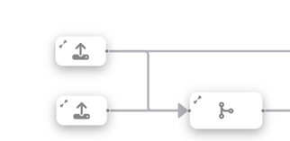
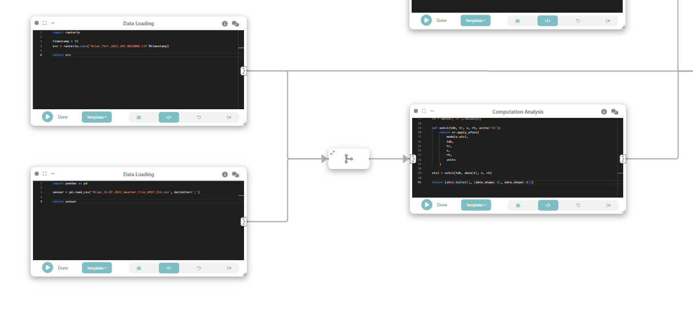
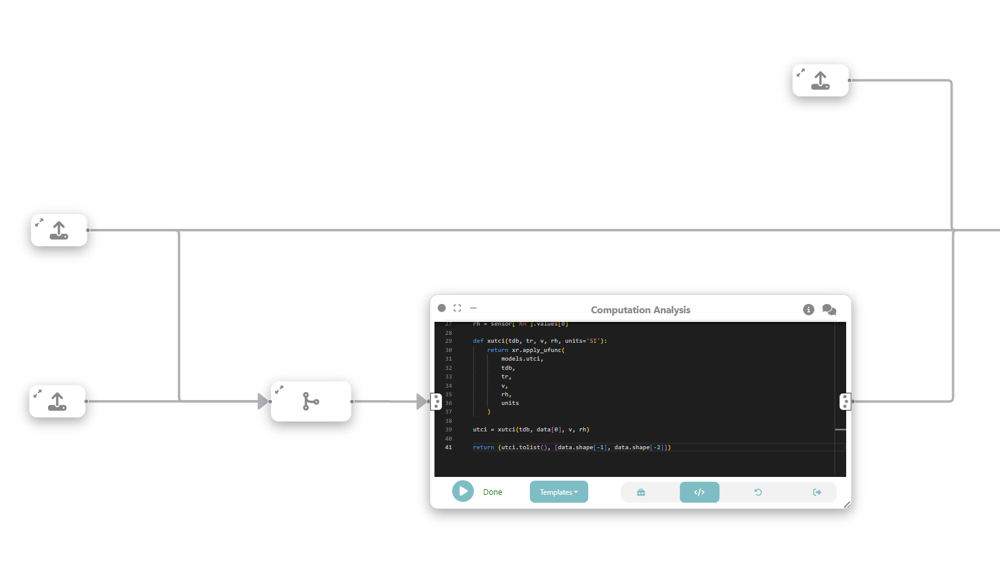

Example: Visual analytics of heterogeneous data¶
In this example, we will explore how Curio can facilitate visual analytics of heterogeneous data by integrating various data sources such as raster data, sensor data, and geospatial data to analyze and visualize urban microclimate in Milan. Here is the overview of the entire dataflow pipeline:

Before you begin, please familiarize yourself with Curio’s main concepts and functionalities by reading our usage guide.
The data for this tutorial can be found here.
For completeness, we also include the template code in each dataflow step.
Step 1: Load high-resolution mean radiant temperature data¶
The icons on the left-hand side can be used to instantiate different nodes, including data loading nodes. Let’s start by instantiating a data loading node and changing its view to Code. Then, we load the high-resolution mean radiant temperature data:
import rasterio
timestamp = 12
src = rasterio.open(f'Milan_Tmrt_2022_203_{timestamp:02d}00D.tif')
return src
Step 2: Loading meteorological data¶
Using a Data loading / file node, we load air temperature (Td), wind speed (Wind) and relative humidity (RH) data from ERA5 hourly meteorological dataset.
import pandas as pd
sensor = pd.read_csv('Milan_22.07.2022_Weather_File_UMEP_CSV.csv', delimiter=';')
return sensor

Step 2.5: Merging raster and meteorological data¶
As an intermediate step, let’s merge the dataflow from Step 1 and 2.

Step 3: Compute universal thermal climate index (UTCI)¶
In this step, we want to compute Universal Thermal Climate Index (UTCI)), a human biometeorology parameter to assess human well-being in the outdoor environment. The UTCI computation takes raster data as input, processes it, and produces another raster dataset as output. This output contains the UTCI values for each corresponding location in the grid.
To do that, we connect the loaded data (raster and tabular) with a custom analysis & modeling node that computes the UTCI. 
import xarray as xr
from pythermalcomfort import models
import numpy as np
from rasterio.warp import Resampling
src = arg[0]
sensor = arg[1]
timestamp = 12
upscale_factor = 0.25
dataset = src
data = dataset.read(
out_shape=(
dataset.count,
int(dataset.height * upscale_factor),
int(dataset.width * upscale_factor)
),
resampling=Resampling.nearest,
masked=True
)
data.data[data.data==src.nodatavals[0]] = np.nan
sensor = sensor[sensor['it']==timestamp]
tdb = sensor['Td'].values[0]
v = sensor['Wind'].values[0]
rh = sensor['RH'].values[0]
def xutci(tdb, tr, v, rh, units='SI'):
return xr.apply_ufunc(
models.utci,
tdb,
tr,
v,
rh,
units
)
utci = xutci(tdb, data[0], v, rh)
return (utci.tolist(), [data.shape[-1], data.shape[-2]])
Step 4: Loading sociodemographic data¶
To study the relationship between UTCI and vulnerable populations, we create a new data node that loads sociodemographic data for populations older than 65 at neighborhood level.

import geopandas as gpd
gdf = gpd.read_file('R03_21-11_WGS84_P_SocioDemographics_MILANO_Selected.shp')
return gdf
Step 5: Merge data¶
Now, we want to spatially join the UTCI data in the raster format with the socio-demographic data loaded in the previous step. To do that, we create another analysis & modeling node, and run the following:

import numpy as np
from rasterstats import zonal_stats
dataset = arg[0]
utci = np.array(arg[1][0])
shape = arg[1][1]
gdf = arg[2]
transform = dataset.transform * dataset.transform.scale(
(dataset.width / shape[0]),
(dataset.height / shape[1])
)
joined = zonal_stats(gdf, utci, stats=['min','max','mean','median'], affine=transform)
gdf['mean'] = [d['mean'] for d in joined]
return gdf.loc[:, [gdf.geometry.name, 'mean', "gt_65"]]
We then filter the resulting gdf to only those with mean UTCI higher than zero. Let’s create a new data cleaning node connected to the previous node and store the result on a data node:
import geopandas as gpd
gdf = arg
filtered_gdf = gdf.set_crs(32632)
filtered_gdf = filtered_gdf.to_crs(3395)
filtered_gdf = filtered_gdf[filtered_gdf['mean']>0]
filtered_gdf.metadata = {
'name': 'census'
}
return filtered_gdf
Step 6: Create a map visualization¶
We can visualize the result of the previous operations by adding a UTK map. The grammar for the map is automatically populated once it receives an input from a previous box.

Step 7: Create a linked scatterplot¶
In this step, we create a linked scatterplot through a Vega-Lite node connected to the output of the data node in Step 5.

{
"$schema": "https://vega.github.io/schema/vega-lite/v5.json",
"params": [
{"name": "clickSelect", "select": "interval"}
],
"mark": {
"type": "point",
"cursor": "pointer"
},
"encoding": {
"x": {"field": "gt_65", "type": "quantitative"},
"y": {"field": "mean", "type": "quantitative", "scale": {"domain": [37, 42]}},
"fillOpacity": {
"condition": {"param": "clickSelect", "value": 1},
"value": 0.3
},
"color": {
"field": "interacted",
"type": "nominal",
"condition": {"test": "datum.interacted === '1'", "value": "red", "else": "blue"}
}
},
"config": {
"scale": {
"bandPaddingInner": 0.2
}
}
}
Step 8: Create a linked boxplot¶
To create a box plot, we first create a “Data Cleaning” node (connected to data node of Step 5) to filter out all attributes we are not interested and only keep the “greater than 65”.

Finally, we create a Vega-Lite node connected to the data cleaning node:
{
"$schema": "https://vega.github.io/schema/vega-lite/v5.json",
"transform": [
{
"fold": ["gt_65"],
"as": ["Variable", "Value"]
}
],
"mark": {
"type": "boxplot",
"size": 60
},
"encoding": {
"x": {"field": "Variable", "type": "nominal", "title": "Variable"},
"y": {"field": "Value", "type": "quantitative", "title": "Value"}
}
}
Step 9: Link map and scatterplot¶
The map, scatterplot, and boxplot are linked through interaction edges (red ones) connected to the data node, allowing for the analysis of outliers of concern, i.e., regions that have a large population of older adults and high UTCI.

Final result¶
This example demonstrates how Curio can be used for visual analytics involving heterogeneous data sources. By integrating raster, tabular, and geospatial data, we can conduct comprehensive analyses of urban microclimate and visualize the results effectively. The linkage between different types of data and interactive visualization enables a deeper understanding of the relationships and potential areas of concern.